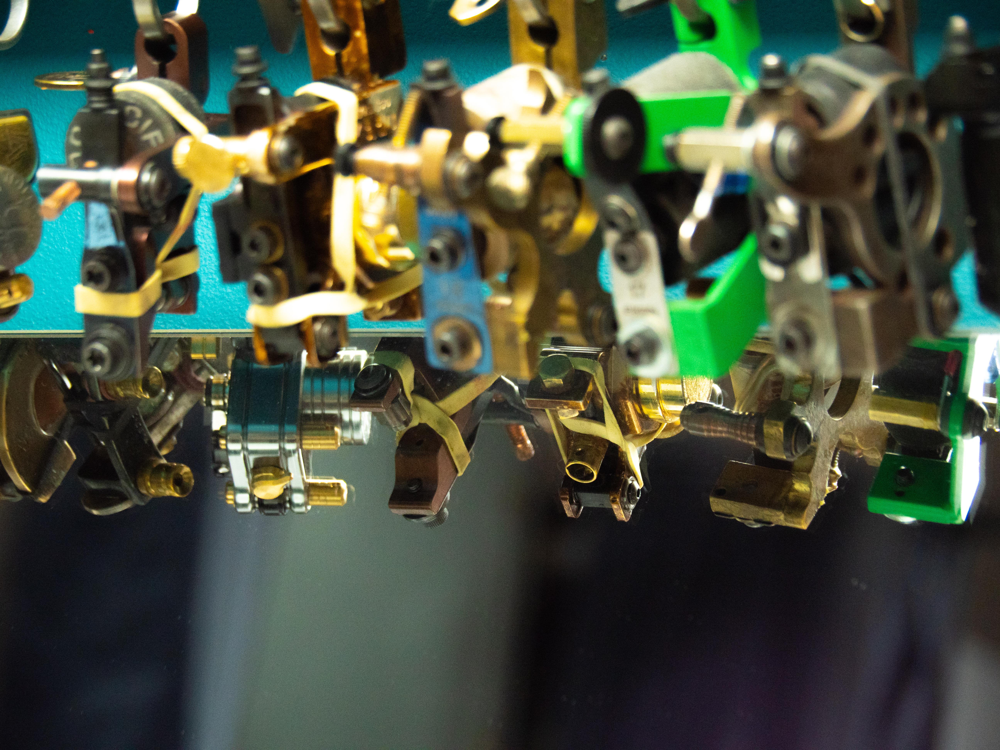
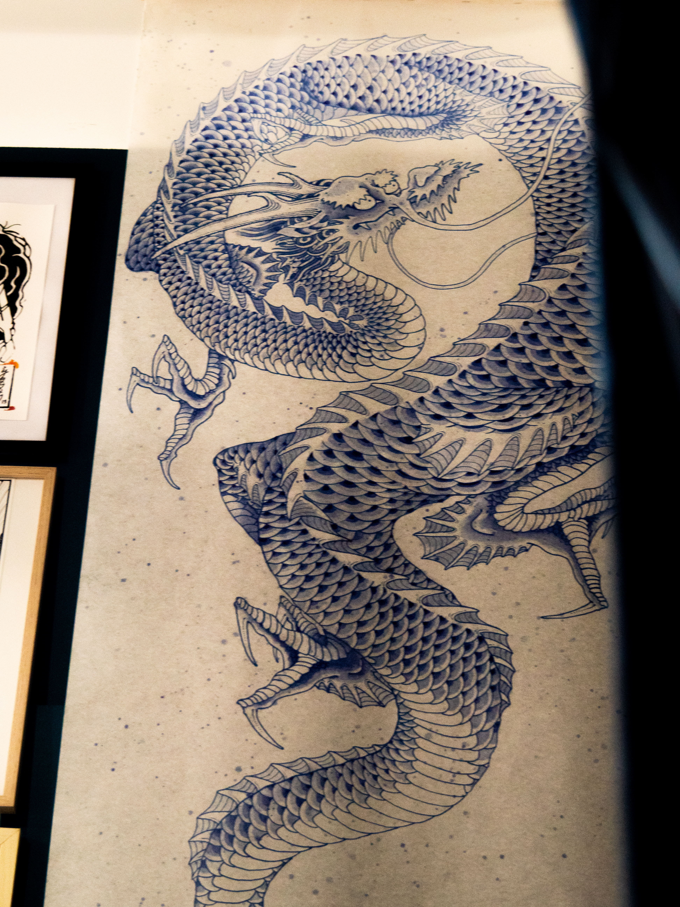
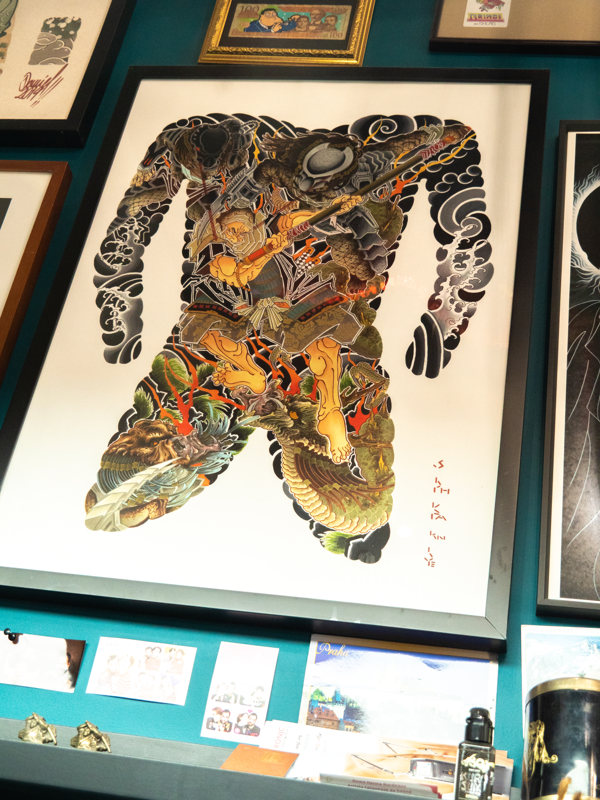
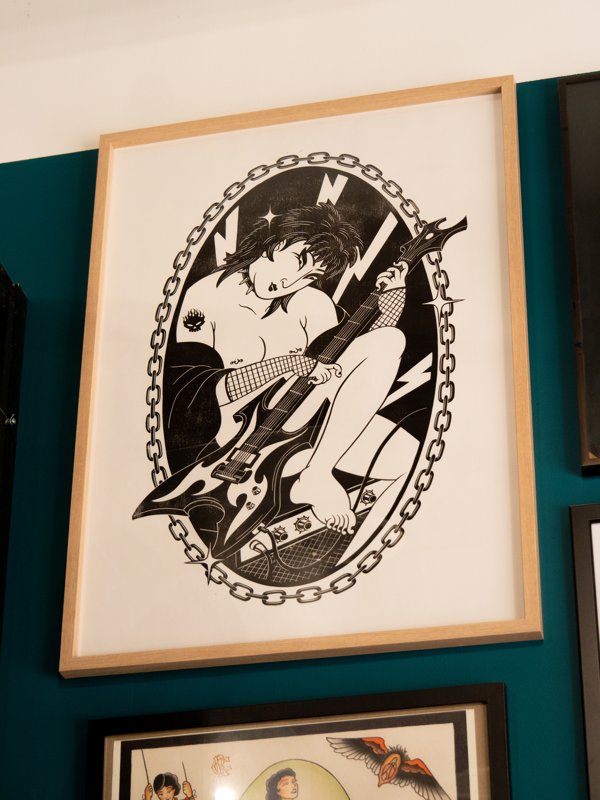

Skin Stories ✦
Reportage photographique sur le thème du tatouage, sous l'angle du Japon: entre tradition et modernité.

Description du Projet
Ce projet consistait à réaliser un reportage photographique sur le thème du tatouage, en adoptant une approche narrative et esthétique inspirée du Japon. L'objectif était de capturer l'essence de cette forme d'expression corporelle, en explorant à la fois ses racines traditionnelles et son évolution contemporaine. À travers une série d'images soigneusement composées, j'ai cherché à raconter des histoires visuelles qui mettent en lumière la richesse culturelle et la diversité des styles de tatouage, tout en rendant hommage à l'artisanat et à la créativité des tatoueurs japonais.
Méthodologie
Ce projet, réalisé en une semaine, à nécessité une planification rigoureuse et une collaboration étroite au sein de notre groupe de travail. Nous avons commencé par une répartition des rôles, avec chacun de nous se concentrant sur différents aspects du projet, tels que la recherche, la prise de vue, et la post-production. Nous avons adopté une approche méthodique pour capturer les images, en nous assurant de respecter les contraintes de temps tout en maintenant une qualité artistique élevée. La collaboration a été essentielle pour surmonter les défis logistiques et créatifs, et pour garantir que notre vision commune du projet soit réalisée de manière cohérente et impactante.
Les photos studio on été réalisé avec du stencil de tatouage sur l'équipe de réalisation, afin de créer une atmosphère immersive et authentique. Nous avons intégré des éléments de la culture, tels que des motifs, traditionnels et des éléments de culture anime pour mettre en avant la dualité et complimentarité du Japon. La partie extérieure à été prise en spontané, intérogeant les passants sur leur rapport au tatouage, et capturant des scènes de vie quotidienne pour illustrer l'omniprésence du tatouage japonais.
Pour la prise de vue, nous avons utilisé mon appareil personnel, un Panasonic DC-G9, qui nous a permis de capturer des images de haute qualité avec une grande flexibilité. Nous avons également accordé une attention particulière à la composition et à l'éclairage, afin de mettre en valeur les détails et les textures des tatouages, ainsi que l'atmosphère unique de chaque scène. En post-production, nous avons utilisé Lightroom Classic pour ajuster les couleurs et les contrastes, et InDesign pour créer une mise en page harmonieuse pour notre présentation finale.
L'espace
Regard parallèle sur l'espace de tatouage, reflet de l'identité et de la culture.





Skin Stories: Japon, Tradition et Pop-Culture by sterenn.piga-chavigny
text-decoration: underline;" > sterenn.piga-chavignyLes Résultats & Impact
Ce projet à été interressant car j'ai pu accompagner mon groupe dans leur premiere approche à la photographie, en partageant mes connaissances et en les guidant à travers les différentes étapes du processus créatif. En travaillant en équipe, j'ai appris à collaborer efficacement, à communiquer mes idées de manière claire, et à intégrer les contributions de chacun pour créer un projet cohérent et impactant. Ce projet m'a permis de développer mes compétences en photographie tout en renforçant ma capacité à travailler en groupe, ce qui est essentiel dans le domaine de la création visuelle.